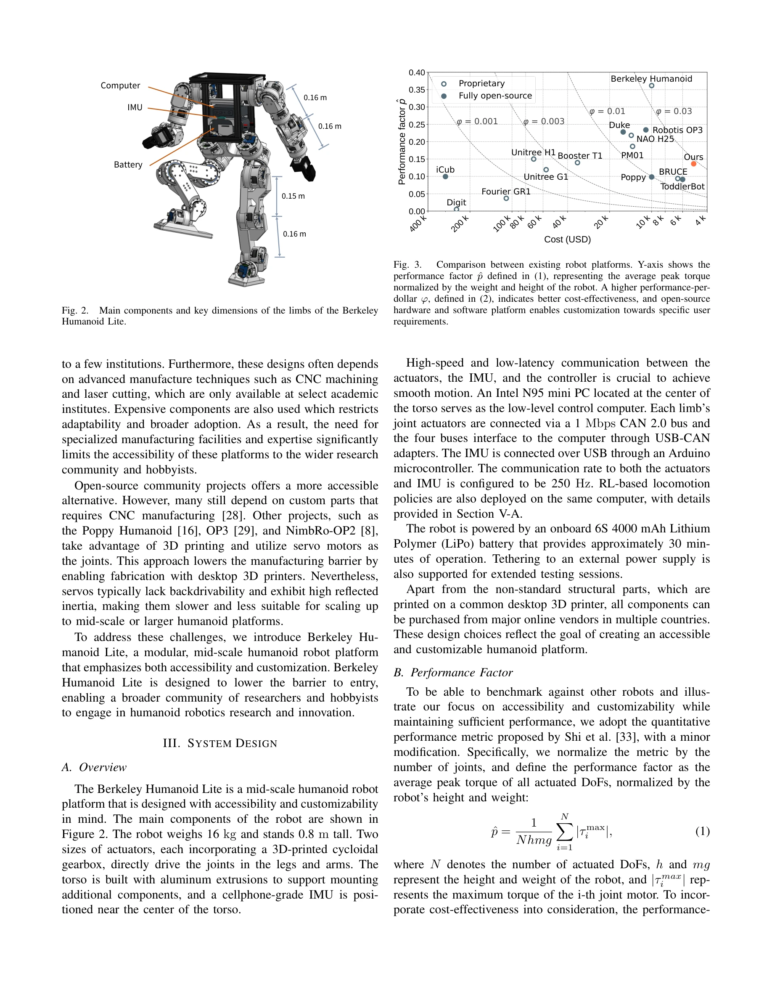

Essence

Fig. 1.
Berkeley Humanoid Lite는 3D-printed cycloidal gearbox를 활용한 오픈소스 휴머노이드 로봇으로, $5,000 이하의 저비용으로 데스크톱 3D프린터와 e-commerce 부품으로 제작 가능하며 강화학습 기반 locomotion controller를 통해 sim-to-real transfer를 입증했다.
저자: Yufeng Chi, Qiayuan Liao, Junfeng Long, Xiaoyu Huang, Sophia Shao, Borivoje Nikolic, Zhongyu Li, Koushil Sreenath | 날짜: 2025-04-24 | URL: https://arxiv.org/abs/2504.17249
Fig. 1.
Berkeley Humanoid Lite는 3D-printed cycloidal gearbox를 활용한 오픈소스 휴머노이드 로봇으로, $5,000 이하의 저비용으로 데스크톱 3D프린터와 e-commerce 부품으로 제작 가능하며 강화학습 기반 locomotion controller를 통해 sim-to-real transfer를 입증했다.
Fig. 1.

Fig. 2.
총평: Berkeley Humanoid Lite는 3D-printed cycloidal gear 기반 저비용 휴머노이드 로봇의 설계와 구현을 통해 로봇 연구의 접근성을 획기적으로 낮추고, 완전 오픈소스 공개 정책으로 커뮤니티 주도의 발전을 가능하게 했다. Reinforcement learning 기반 locomotion control의 성공적인 sim-to-real transfer는 플랫폼의 실용성을 입증하며, 향후 휴머노이드 로봇 연구의 민주화를 주도할 초석이 될 가능성이 크다.